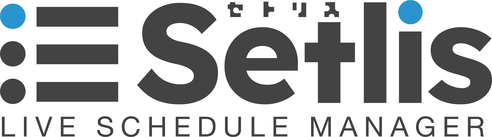
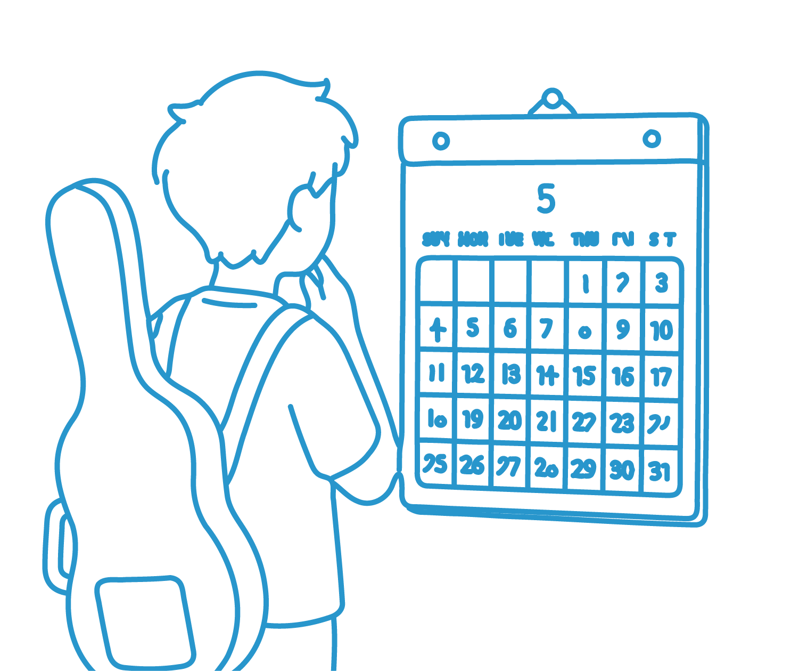
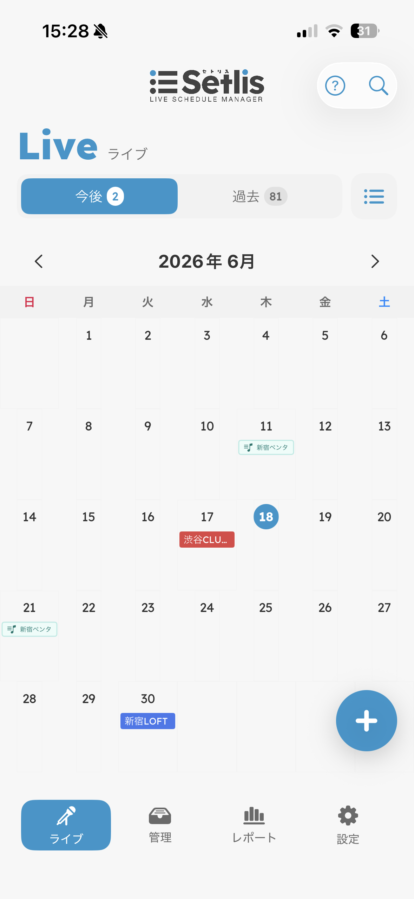
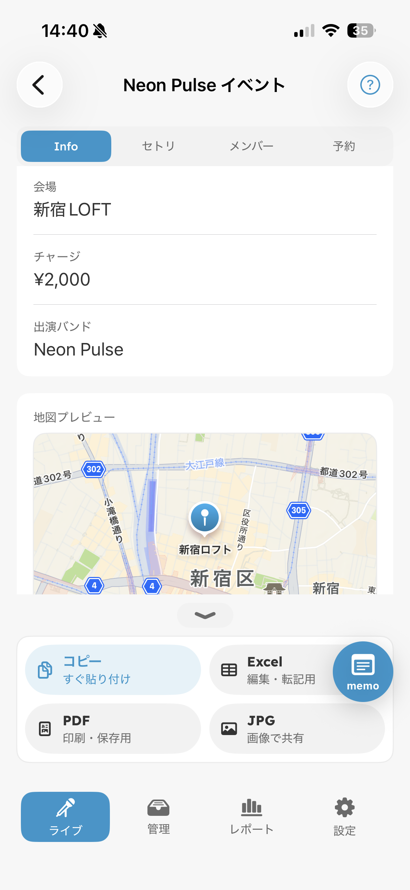
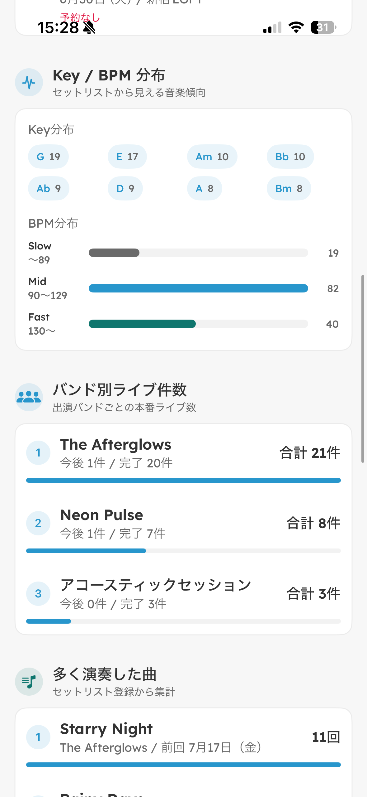
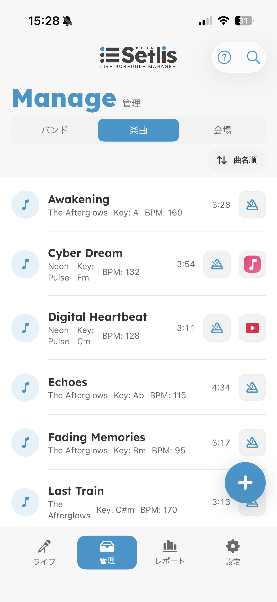
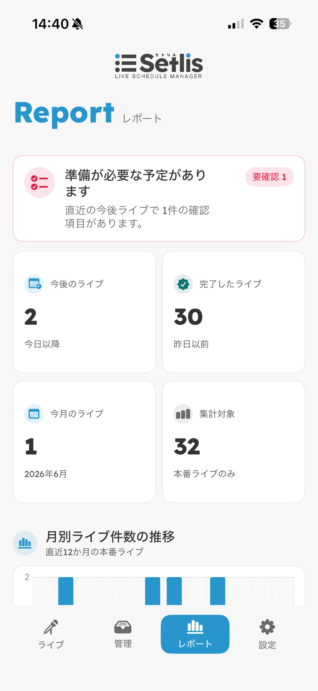
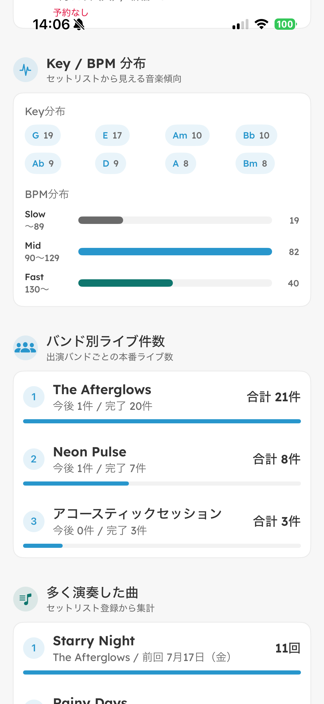

Reúne próximos conciertos, ensayos e historial de actuaciones. Consulta fechas, salas, apertura e inicio cuando lo necesites.
Gestor de conciertos para artistas
Conciertos, ensayos,
repertorios y reservas







Disponible en japonés, inglés, español, chino simplificado, chino tradicional y coreano.
Gratis para empezar. Algunas funciones se desbloquean con una compra única.
Noticias
Ver.1.3.1 disponible Ver.1.3 disponible Ver.1.2 disponible Lanzamiento oficial en App Store Página de lanzamiento publicadaFunciones
Lo que Setris te ayuda a organizar
Gestiona fechas
con repertorios y ensayos
Organiza repertorios, miembros y reservas por concierto. Accede a lo necesario durante la preparación y el día del show.
Registra bandas y canciones
para varios proyectos
Guarda bandas, canciones y salas con antelación. Reduce entradas repetidas al crear fechas y mantén varios proyectos ordenados.

Guarda tonalidad, BPM y enlaces de partituras por canción. También puedes añadir enlaces a YouTube, Spotify o Apple Music para reproducirlas al instante.
Revisa el historial
y las canciones más tocadas
Conserva los conciertos terminados como registro de actividad. Revisa recuentos, tendencias de reservas y canciones frecuentes para planificar mejor.


Los informes muestran tendencias de canciones e historial por banda, para que sea fácil mirar atrás.
Planes
Gratis para empezar. Desbloquea todo con una compra única.
Elemento
Gratis
Premium
Conciertos
Hasta 10
Ilimitados
Bandas
Hasta 2
Ilimitadas
Canciones
Hasta 10
Ilimitadas
Salas
Solo entrada manual
Guardar desde la pestaña Salas
Conciertos anteriores
Vista limitada
Acceso completo
Reservas
No
Disponible
Metrónomo
No
Disponible
Precio
Gratis
Compra única ¥1,000
Premium es una compra única, no una suscripción.
Preguntas
¿Qué sistemas son compatibles? ¿Funciona en iPhones antiguos?
Setris requiere iOS 18 o posterior. Android no está disponible por ahora. La app es ligera y está pensada para responder rápido.
¿Se vuelve lenta si registro muchos conciertos?
Se han probado el registro y la navegación con 7,000 conciertos de prueba. Setris está diseñada para uso prolongado y para datos crecientes.
¿Tengo que registrar datos personales?
Setris no recopila información personal. Puedes empezar a usarla sin crear una cuenta.
¿Puedo hacer copia de seguridad?
Sí. Los datos de texto, como conciertos, canciones, bandas y salas, se pueden guardar en JSON. Imágenes de carteles, PDF, ajustes y plantillas no se incluyen.
¿Habrá más funciones?
Se está considerando una función para crear planos de escenario. También son bienvenidas otras solicitudes.
Update
Historial de actualizaciones
v1.3.1
- Ahora puedes editar conciertos anteriores después del show.
- La información, repertorios, reservas, miembros y notas del concierto se pueden corregir más tarde.
- Incluye otros ajustes menores de estabilidad.
v1.3
- El repertorio a pantalla completa es más compacto.
- Se añadió interfaz en español dentro de la app.
- La app muestra un resumen de novedades una vez después de actualizar.
v1.2
- Se añadió la galería de carteles al informe Premium.
- Los carteles se pueden ver por fecha reciente o en orden aleatorio.
- Desliza para cambiar y toca un cartel para abrir los detalles del concierto.
- El botón de reproducción automática activa una presentación cada 3 segundos.
- Incluye otras correcciones y mejoras de estabilidad.
v1.0.6
- Se actualizaron las URL públicas de la página oficial, términos y privacidad.
- Los enlaces de soporte y políticas dentro de la app se alinearon con las páginas públicas actuales.
v1.0.5
- El CSV compatible con Excel se reorganizó para leer mejor nombre, fecha y sala del concierto.
- El CSV de repertorio puede incluir enlaces de partituras y reproducción.
- La comparación de planes explica las diferencias de exportación entre Gratis y Premium.
v1.0.4
- El control de orden de canciones usa una visualización de texto que se corta menos en pantallas estrechas.
v1.0.3
- Ahora puedes añadir enlaces de YouTube, Spotify y Apple Music a canciones y repertorios.
- Las actualizaciones de canciones se reflejan más fácilmente en repertorios futuros.
- Se mejoraron las plantillas de anuncio y la edición de repertorios.
v1.0.2
- Se refinó la entrada de fecha y hora para conciertos y ensayos.
- Los ensayos vinculados a conciertos y los ensayos independientes se distinguen mejor en el calendario.
v1.0.1
- La presentación del plan gratuito y funciones Premium es más clara.
- Los términos y la política de privacidad se actualizaron para publicación.
v1.0
- Se publicaron las funciones base para conciertos, ensayos, repertorios, reservas y miembros.
- Incluye textos de anuncio, flujo para publicar en X, notas de concierto y partes libres para miembros.
- Los datos de texto, como conciertos, canciones, bandas y salas, se pueden guardar como JSON.
Descargar
Descargar
Gratis para empezar. Algunas funciones se desbloquean con una compra única.